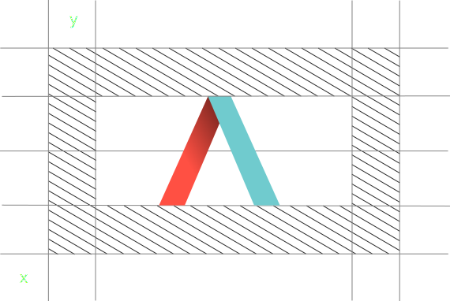

The Ʌ symbol can be used in a variety of ways to add movements and dynamism to a static presentation or document.
The symbol should either be in full colour (tangelo & topaz) or should be an opaque black and white version as shown below. The grey version can be used at 30% opacity or 100%.
The symbol can be placed directly in line with the background, as shown above, or be used off-centre with the tail of the symbol being placed at the cut off point. Below demonstrates this.
Appropriate spacing should be placed around the symbol.
